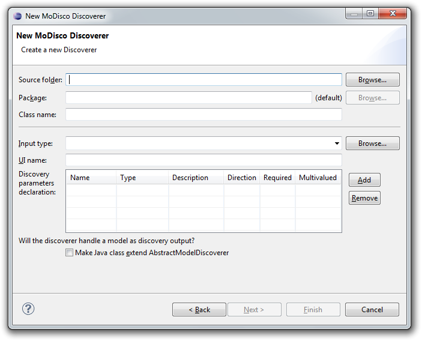
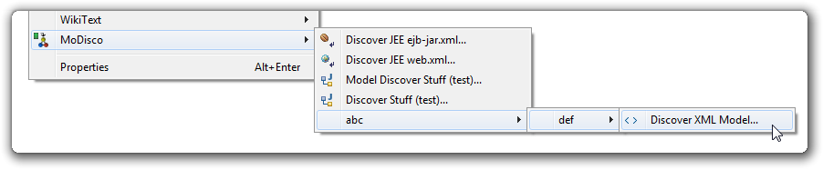

The framework defines a Java interface org.eclipse.modisco.infra.discovery.core.IDiscoverer<T> that every discoverer must implement.
public interface IDiscoverer<T> {
boolean isApplicableTo(T source);
void discoverElement(T source, IProgressMonitor monitor) throws DiscoveryException;
}
Annotating your method/field as parameters of the discoverer enables a generic description using the catalog API (see below) and so some client generic behavior (e.g. launchconfig feature for end user).
@Target({ ElementType.METHOD, ElementType.FIELD })
public @interface Parameter {
String name();
String description() default "";
boolean requiresInputValue() default false;
}
The developer is free to annotate directly a Java field or a getter/setter method, or both field and getter/setter with the same id. See the java documentation on org.eclipse.modisco.infra.discovery.core.annotations.Parameter for details about the properties and the rules to satisfy. Some compilation errors will appear if some of the rules are violated (JDT APT processing must be activated on the project).
public class BasicDiscoverer implements IDiscoverer<Object> {
private String myParamIn;
private URI myParamOut;
@Parameter(name="PARAM_IN")
public void setMyParamIn(final String value) {
this.myParamIn = value;
}
@Parameter(name="PARAM_OUT")
public URI getMyParamOut() {
return this.myParamOut;
}
public boolean isApplicableTo(final Object source) {
return ...;
}
public void discoverElement(final Object source, final IProgressMonitor monitor) {
...
}
}
Note : inheritance is taken into account in the framework for the generic description of a discoverer: your discoverer class will inherit from the parameters declared (using annotations) on the super class or interfaces. The annotation validity rules will be checked against this whole parameters group.
Some usual parameters and behaviors have been grouped in abstract java discoverers for reuse.
org.eclipse.modisco.infra.discovery.core.AbstractDiscoverer proposes some usual services for testing the validity of the discovery source.
org.eclipse.modisco.infra.discovery.core.AbstractModelDiscoverer proposes some usual parameters for handling a model as result of the discovery (based on EMF org.eclipse.emf.ecore.Resource API). It also proposes some usual model creation and save actions.
You can specify an initial value for a discoverer parameter using the
@ParameterInitialValue annotation on a method that returns an instance of the parameter type, and takes a source parameter that has the same type as the source of the discovery (i.e. corresponds to the generic <T> parameter of the discoverer). This method should be static, but this is not required.
For example, this can be used to initialize a parameter that depends on the source of the discovery:
@ParameterInitialValue(name = "ELEMENTS_TO_ANALYZE")
public static ElementsToAnalyze getElementsToAnalyzeInitialValue(final IJavaProject source) {
return new ElementsToAnalyze(source);
}
note: Since the initialization can depend on the source parameter, discoverer parameters that are initialized in this way will be reset to their initial value every time the source changes (for example when switching the source in a discovery launch configuration).
A discoverer must declare an ID and its Java implementation of the IDiscoverer interface to be managed by the Discoverers catalog (see below).
Use extension point org.eclipse.modisco.infra.discovery.core.discoverer to declare the discoverer, with the following attributes :
To create a new MoDisco discoverer, you can use the wizard :
You will be presented with a wizard that looks like this:

If you selected a project, source folder or Java package, then the first two fields are already filled in. If not, then click Browse... to select where you want to create your discoverer class.
For a Discoverer to appear in the MoDisco menu of Discoverers, it must be registered using the org.eclipse.modisco.infra.discovery.ui.discoverer extension point (note that there are 2 discoverer extension points; one in the discovery.core namespace, and the other in the discovery.ui namespace).
In the extension, you must provide:
You can also set:
For example, if you register a discoverer like this:
<extension point="org.eclipse.modisco.infra.discovery.ui.discoverer">
<discoverer
discovererID="org.eclipse.modisco.xml.discoverer"
icon="icons/xml_tag.gif"
label="Discover XML Model"
path="abc/def"/>
</extension>
You will get:

To access the discoverers, you must use the discovery manager (IDiscoveryManager.INSTANCE).
For example, to discover a XML model:
XMLModelDiscoverer2 discoverer = (XMLModelDiscoverer2) IDiscoveryManager.INSTANCE.createDiscovererImpl(XMLModelDiscoverer2.ID); discoverer.discoverElement(xmlFile, new NullProgressMonitor()); Resource resultModel = discoverer.getTargetModel();
The discovery manager represents discoverers using two interfaces:
See the java documentation associated to these interfaces for more details.